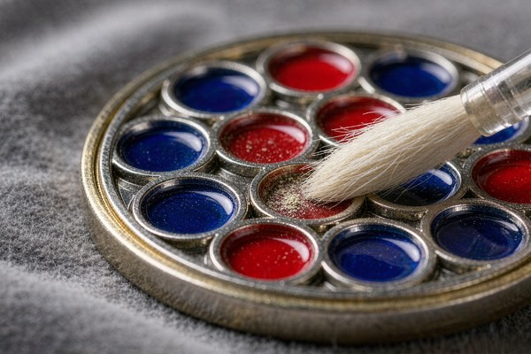
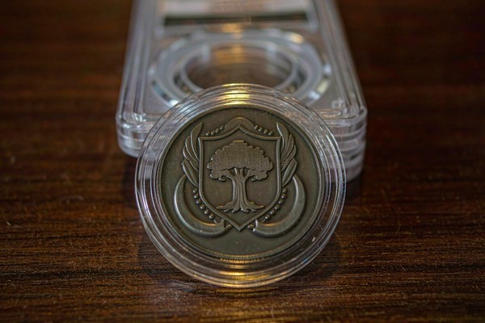

Start Here: Dry Dust and Mild Soap Only
Most coins that look dirty are carrying three things: pocket dust, skin oil, and the ordinary grime of a table. None of that needs a chemical. It needs warm water, a drop of mild dish soap, and something soft enough that it cannot scratch the plating.
The method, in full: put the coin in a shallow bowl of lukewarm water with one small drop of mild, unscented dish soap. Let it sit for a minute so the oil loosens. Then work the surface with a soft cloth or a soft-bristled brush, using the brush only in the recesses where a flat cloth cannot reach. Rinse under lukewarm running water, not hot and not cold. Then dry it immediately with a lint-free cloth, and let it sit open for a few minutes before it goes back into storage. Our guide to plating and metal finishes covers what each finish is made of, which matters a lot for deciding whether the soap method is even right for your coin.
There is one finish where this entire method is wrong, and it is common enough that it deserves its own warning: antique and matte finishes must never be washed. On an antiqued coin, the dark patina sitting in the recesses is not dirt. It is the finish. It is a chemical darkening applied on purpose to make the raised relief pop, and the whole look depends on the contrast between bright high points and dark low points. Wash it and the patina goes, leaving a flat, uniformly coloured coin that looks cheaper than it did when it arrived. If an antiqued coin looks grubby to you, it does not need cleaning. It needs a soft dry cloth, or nothing at all.
| Finish | Can it be washed? | What to use |
|---|---|---|
| Mirror / polished gold, silver, nickel | Yes, gently | Lukewarm water, mild soap, lint-free cloth |
| Matte or brushed | Yes, gently | Same, but no abrasive cloth and no scrubbing |
| Antique / patina | No | Dry soft cloth only |
| Soft enamel | Limited | Damp cloth, minimal water, no soaking |
| Hard enamel | Yes, gently | Mild soap and soft brush, dry fast |
| UV printed / epoxy coated | No | Dry microfiber cloth only |
Removing Fingerprint Oil and Light Tarnish
Fingerprints are the most common thing people want off a coin, and they are also the easiest to misdiagnose. A fingerprint is not a stain. It is skin oil that has oxidized, which means it responds to a degreaser, not to scrubbing. Scrubbing a fingerprint is how you put fine swirl marks into a polished finish.
Put a drop of mild dish soap on a barely damp section of cloth and wipe the mark once. Let the soap do the work, then dry. For a stubborn print, use a clean face of the cloth and a second pass. Two gentle passes beat twenty hard ones, and they leave the plating intact.
Light tarnish is a different problem, and here is the part people get wrong: on a plated coin, tarnish is a symptom, not a surface defect. Dark dulling on a silver-plated coin usually means the plating is thinning, and thinning plating cannot be reversed by cleaning. It can be lifted gently with a paste of baking soda and water worked in with a soft cloth, but you are now removing metal from the coin, and the plating underneath is the only thing protecting the base alloy from tarnishing faster. The honest answer for a badly darkened plated coin is that it has reached the end of its life as a display piece, and a professional conservator or a re-plating job is the fix, not a home remedy.
Solid uncoated silver is different, because the tarnish is in the silver itself and can be reduced without removing the coin's own material. But a challenge coin is rarely solid silver, so treat tarnish removal as a last resort rather than a routine step. Our guide to how challenge coins are made explains what most coins are actually made of, which is usually a copper-based alloy under a plating layer rather than precious metal throughout.
The best tarnish treatment is prevention, and prevention is boring: handle the coin by its edges. The oils that cause the fingerprints come from your fingers, so a coin you only ever touch at the rim stays clean without any cleaning at all. If you are handing a coin to someone else, offer it the same way. It is a small habit that keeps a coin looking new for years, and it costs nothing.
Hard Enamel vs Soft Enamel: Different Rules
The two enamel finishes have completely different chemistry, and they need different treatment. Our soft enamel versus hard enamel guide walks through how each one is made, which is where the cleaning rules come from.
Soft enamel is a pigmented resin poured into a recessed field and cured, typically leaving a slightly domed surface sitting below the metal line. That dome is the problem. Water and solvent can creep under the edge of the fill and loosen the bond, and once the enamel lifts it lifts in a curve, because that is the shape of the fill. The rule is therefore minimal moisture: a damp cloth and a soft brush, no soaking, no running water across the face for long, and dry it fast. Soft enamel also collects dust in its recesses, and a dry soft brush lifts that dust without any liquid at all, which is usually all it needs.
Hard enamel is filled and then ground and polished back until it is flush with the metal, which makes the surface a single continuous plane. That makes it more forgiving of a quick wash, because there is no edge for water to get under. What it does not tolerate is friction: a hard enamel surface that has been polished to a gloss will show swirl marks from a cloth dragged across it with pressure. Use a clean, soft cloth and let the soap do the work.

Two finishes need their own note. UV printed coins carry a full-colour image printed onto the face, and that print is a thin layer that any liquid, any friction, and any abrasive will damage. A dry microfiber cloth is the only sensible tool. Epoxy coated coins have a clear layer over the face for extra scratch resistance, and that layer is a resin, which means the same caution as soft enamel: keep solvents away from it and do not scrub the surface. If you are not sure which finish you have, look at the coin under a light. A printed face has a continuous image with no metal showing through; an epoxy face has a visible gloss layer with a slightly raised edge at the rim.
And for the collector market specifically, there is one more category worth flagging. A coin that has been deliberately toned, aged, or given a patina by a collector has had a chemical treatment applied that was meant to stay put. Cleaning it is not just risky, it removes the thing that made it collectible. The same goes for any coin that came with a certificate or a documented provenance. When a coin has a story attached to its surface, that surface is not dirt.
Four Things Never to Use on a Coin
Most of the damage done to custom coins is done by a well-meaning owner with a product that was never meant to touch a plated or enameled surface. There are four categories, and all of them show up regularly.
1. Metal polish and abrasive cleaners. This includes metal polish pastes, polishing compounds, and anything sold as a coin cleaner that contains particles. These are abrasives designed to remove a thin layer of metal, and on a plated coin that layer is the plating. It comes off as a dull patch that looks like a wear spot and cannot be repaired without re-plating the entire coin. The same category swallows toothpaste, which contains a much coarser abrasive than people expect, and scouring powder. A simple test: put the product on a fingernail and wait a minute. If it stings your nail, it will scratch the coin.
2. Acids. Vinegar, lemon juice, and citric acid cleaners will etch metal and will destroy enamel at the same time. Vinegar on a coin does not dissolve it dramatically, it does something worse: it dulls the plating, softens the enamel resin, and leaves a hazy film that no amount of soap will remove. Acid damage is also hard to spot at first, which means the coin looks fine on the day you cleaned it and wrong six months later.
3. Ultrasonic cleaning. This one feels like the professional option, and for solid metal coins without enamel it is one. The vibration that lifts dirt out of a crevice will also lift soft enamel at its metal border, chip hard enamel at a thin edge, and strip the patina from an antique finish. It drives solution into the seam where a two-sided coin's two halves meet, and on a spinner or a bottle opener it works the moving part loose. Unless the coin is solid metal with no enamel, no plating, and no moving parts, ultrasonic cleaning is the single most effective way to destroy a coin you own.
4. Alcohol and solvents. Isopropyl alcohol is the most common mistake in this category, because it is a genuinely good cleaner for the wrong kind of object. It strips the plating from gold-plated coins, dulls mirror finishes, softens resin and epoxy coatings, and attacks some printed surfaces. It is reasonable only on a coin you know is solid unplated silver, with no enamel and no coating, and even then you would use it sparingly. Mild dish soap is safer on everything else and does the same job on fingerprints.
| Do not use | What it does to a coin |
|---|---|
| Metal polish, toothpaste, scouring powder | Abrasive particles cut through the plating and leave dull, unrepairable patches |
| Vinegar, lemon juice, acid cleaners | Dulls plating, softens enamel, leaves a haze that soap will not remove |
| Ultrasonic cleaner | Lifts enamel at the border, chips edges, strips antique patina, loosens moving parts |
| Alcohol, acetone, solvents | Strips plating, dulls mirror finishes, softens resin and epoxy coatings |
Drying, Handling, and Storage Right After Cleaning
The last step is where careful cleaning gets undone. A coin that was washed properly and then put straight back into a damp sleeve is worse off than a coin that was never washed at all.
Dry it completely before anything else. Pat it with a lint-free cloth, then leave it sitting in open air for several minutes. Residual water sits in the recesses and dries into a permanent haze that no further cleaning will shift. Water trapped against a soft sleeve produces a white spot that is chemically bonded to the surface and permanently discolours the coin. This is the single most common way a well-intentioned cleaning damages a coin that was already fine.
Store it in something inert. Avoid PVC. Soft PVC coin flips and sleeves, which are still the most common thing sold for coins, release plasticizers over time that leave a sticky film and turn a polished surface cloudy. Collectors call the result PVC slime, and once it starts it usually has to be removed by a specialist. Use Mylar or polypropylene capsules and flips, which are inert and will not off-gas. The challenge coin etiquette guide covers the display and carrying conventions that go with this, including the pouch and sleeve habits that keep a coin from rubbing against its neighbours.

Store coins apart, not in a pile. Most scratches on a challenge coin come from another coin rubbing against it in a bag. A few millimetres of separation does more for a coin's appearance than any cleaning ever will.
Keep it away from heat and sunlight. Direct sun will fade enamel colour over time, and a car dashboard or a window shelf will do it faster than you would expect. Temperature swings are also worth avoiding, because repeated condensation cycles are what push moisture against a coin's surface.
And then there is the simplest rule of all, which saves you from doing any of this: clean less than you think you need to. A coin stored in a capsule needs a soft dry wipe every few months to lift surface dust, and that is genuinely all. Washing a coin more often mostly removes the thin layer of oils that are protecting the plating, which means each cleaning slightly accelerates the wear you were trying to prevent. If a coin keeps looking dull no matter how carefully you clean it, the answer is not a better cleaner. It is that a mirror finish and a coin that lives in a pocket are not the same product, and no amount of soap changes that.
Want a Coin That Needs Almost No Care?
Tell us how the coins will actually be used and we will recommend the finish and plating that suits that, from a hard enamel piece that wipes clean in seconds to a durable no-color strike for a coin that goes in a pocket every day.
Get Free QuoteFrequently Asked Questions
How do you clean a challenge coin without damaging it?
Use warm water and a small amount of mild dish soap, a soft cloth or soft-bristled brush for the recesses, and dry it immediately with a lint-free microfiber cloth. That method handles dust, fingerprints, and light grime on almost every finish. The exceptions matter more than the method: never wash an antique or matte finish, because the dark patina in the recesses is part of the finish and washing it off leaves the coin looking flat and cheap.
Can I use alcohol to clean a challenge coin?
Not as a general rule. Isopropyl alcohol can strip the plating from gold-plated coins, soften resin or epoxy coatings, and dull some printed surfaces. It is only reasonable on a coin you know is solid unplated silver with no enamel and no coating. For everything else, mild dish soap is the safer choice and works just as well on fingerprints and light grime.
Why should I never use an ultrasonic cleaner on a coin?
Ultrasonic cleaning uses vibration to lift dirt out of crevices, and it does that to enamel too. Soft enamel can lift at the metal border, hard enamel can chip at a thin edge, and antique finishes lose the dark patina that sits in the recesses. It also drives cleaning solution into seams and under moving parts. The technology is used on solid metal coins with no enamel, no plating, and no loose parts, which is a small fraction of custom challenge coins.
How do I remove fingerprints from a coin?
A fingerprint is skin oil, so it comes off with a degreaser rather than a scrub. Put a drop of mild dish soap on a barely damp cloth and wipe the area, then dry immediately. For stubborn marks, a second pass with the cloth folded to a clean face usually does it. Avoid going over the same spot repeatedly with a hard cloth, because that is what creates fine swirl marks on a polished finish.
How do I get tarnish off a silver-plated challenge coin?
Tarnish on a plated coin is a warning sign rather than a problem to solve. A tiny amount of baking soda mixed with water into a paste, applied with a soft cloth and worked gently, will lift light dulling on a silver-plated surface. But any aggressive method risks taking the plating with it, and once the plating is gone the coin cannot be restored. For a heavily blackened coin, a professional conservator is a better investment than a home remedy.
Can I clean a coin with toothpaste or baking soda?
Baking soda is fine in moderation because it is a mild abrasive and is dissolved in water first. Toothpaste is not, because most formulas contain a much coarser abrasive that will scratch a polished or mirror finish in ways that cannot be polished out. The same rule applies to any household cleaner containing particles. If you are unsure, put the cleaner on your fingernail first and wait a minute. If it stings your nail, it will scratch the coin.
How should I dry a coin after cleaning?
Immediately, and completely. Air drying leaves a water film in the recesses that becomes a permanent haze, and any moisture trapped against a soft coin sleeve causes a white spot that never comes out. Pat the coin dry with a lint-free cloth, then let it sit open to the air for a few minutes before you put it anywhere. Only once it is completely dry should it go back into its capsule, sleeve, or box.
What kind of storage should I use after cleaning?
PVC-free, acid-free storage. Soft PVC coin flips and sleeves release plasticizers over time that leave a sticky film and can turn a polished surface cloudy, which is why collectors call it PVC slime. Mylar or polypropylene capsules and flips are inert, and they also protect the coin from the scratches that come from coins rubbing against each other. Store coins apart rather than in a pile, and keep them away from direct sunlight and humidity.
How often should I clean a challenge coin?
Rarely, and never on a schedule. A coin kept in a capsule or pouch needs nothing more than a soft dry wipe every few months to remove surface dust. Cleaning a coin more often than that mostly removes the oils that protect the plating and accelerates the wear you were trying to prevent. If you find yourself cleaning because it looks dull rather than because it is dirty, what you actually want is a different finish, not a cleaning.